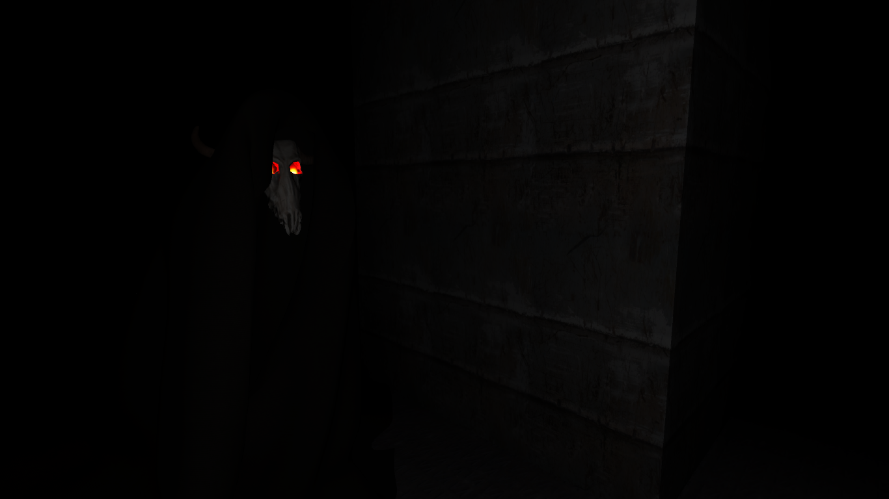
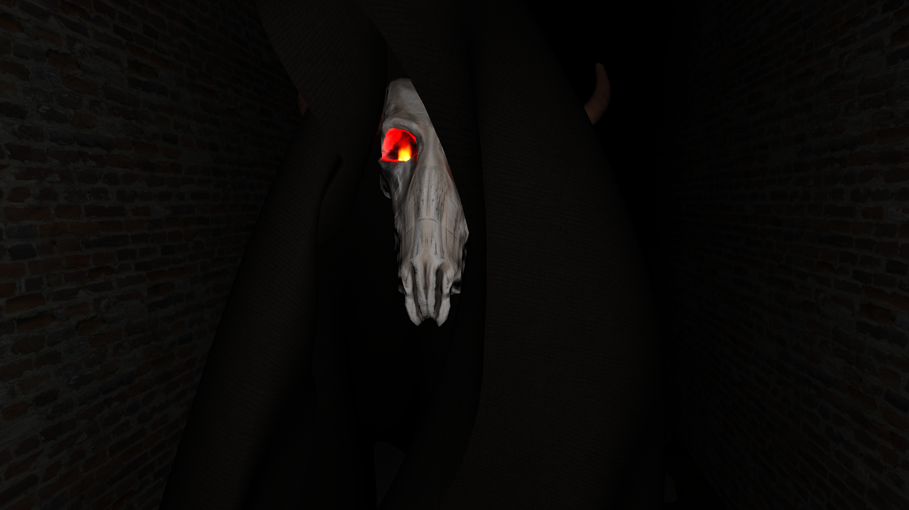

This is a Unity game I created in the span of a weekend as an exercise. It features freely available sound effects, images and music, as well as two 3D models. The name of the game comes from the constant heartbeat sound I used in the game, which changes rythm based on how scared the character is. I feel very proud of the final result, which you can download and play here. The game has standard PC FPS controls and the goal is to find the door out of each maze.
Another very important feature of the game is the fact that the first two levels (third one is static for event purposes) are randomly generated each time. This creates a maze that is not very easy to navigate even if you are familiar with the game.
Furthermore, the enemy in the game (death) has a simple, but efficient AI, which allows it to spawn around corners in front of the player, as well as sometimes spawn behind them. To be balanced, it makes sure there is always a safe route, for example sinking in the floor if it caught the player in a dead end. This both makes the game fair and enchances the experience (wow, he almost got me this time).
You can contact me on angel_lakov@yahoo.com.